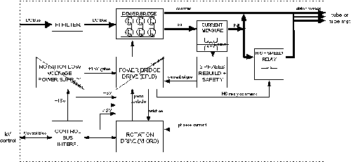
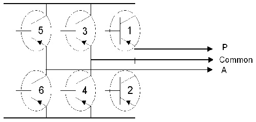

Operating Documentation
Direction 5193755-800, Rev# 8
BrightSpeed (Ltd. Access) Service Methods - Adv
Operating Documentation |
The rotation function involves the following sub-assemblies:
Rotation board
Tube stator
The main features of the function are:
One type of rotation board is available: high speed (max speed=180Hz=10800rpm) rotation board (with the capacity to drive the rotor in Low Speed).
Each rotation board is capable to drive GE tubes (23Ohms/23Ohms stator), CGR tubes (50/110) and all vendors tubes. Tube adaptation is made by selecting the right capacitors module to adapt to the stator.
High speed rotation is capable to drive both tri-phased stator and bi-phased stators.
The rotation function also manages the tube thermal safeties and the tube cooling commands.
Illustration 1: JEDI Generator/Rotation Function

| NOTE: | For a larger version of the above illustration, click on the pdf icon below: |
Media File 1: JEDI Generator/Rotation Function

Illustration 2: High Speed Rotation

| NOTE: | For a larger version of the above illustration, click on the pdf icon below: |
Media File 2: High Speed Rotation

Rotation Principles:
Since the rotation function must be able to drive either tri-phased stator or bi-phased stators, the inverter is a three-leg inverter with six IGBTs. This module is packaged in one pack.
The inverter is fed by the DC bus.
The inverter drive uses a PWM (Pulse Width Modulation) of the IGBTs commands.
This principle consists in applying a periodic command on the IGBTs equal to the speed selected in order to generate a sine wave current in each phase at the anode speed frequency with the optimum angle between the phases.
Inside this "fundamental" command frequency, the IGBTs commands duration is modulated to get the right level of current in the phases.
Illustration 3: IGBTs

Illustration 4: Example of Bi-Phased SLEM Motors High Speed Drive Timing

Depending on the stator windings number (2 or 3), of their impedance and of the speed selected, the main and auxiliary phases are either connected directly to the phases (example: in high speed mode on a tri-phased low impedance stator, in low speed mode for a bi-phased stator, in high speed brake) or through a module of shift capacitors whose role is to put the right angle between the phases to ensure maximum efficiency in acceleration and run. This capacitor module is defined for each stator and so different from one stator (tube) to another.
Rotation is including a relay which allow to put the capacitors in the circuit and to short-circuit it depending of the state of the rotation drive.
As the IGBTs are connected to the DC voltage, IGBTs gates drives require isolation. This is accomplished through optocouplers. Gates drives power supplies are generated by a small flyback power supply which uses the +15V of the Control Bus to generate 4 isolated +15V to power each IGBT gate (and the 5V for all logic function).
The rotation drive mainly relies on a 16 bits, 20MHz, 32Kbyte memory microcontroller. It is in charge of the main functions:
Get at power-up the rotation database containing all the data required to drive the stator (through the CAN serial line of the Control Bus):
currents reference for each state
acceleration and brake durations
inverter current safety levels
Receive the commands (go to speed=10000rpm), and update the rotation state accordingly.
Measure the inverter currents and regulate the inverter (fundamental and modulation).
Give the feedback (i.e. speed=10000rpm; errors) to the main software and put the rotation in a safe state in case of error.
Read the tube safeties and drive the tube cooling.
The microcontroller commands the power bridge drive through an EPLD with these responsibilities:
Mix fundamental and modulation commands.
Demultiplex the PWM command to command the 6 IGBTs.
Stop the inverter in case a safety occurs which requires fast action, such as: inverter overload, mains drop, tube temperature reaches 70 degrees.
Drive the high speed relay.
Fundamental frequency is applied so that the sine wave in the phases is at the frequency corresponding to the desired anode speed. It is calculated by the microcontroller.
The modulation of the IGBT commands is the result of a regulation loop which ensure to reach the right current level for the tube and the rotation state.
This loop ensure optimum acceleration performances in all conditions of DC bus and of stator temperature.
The current is measured inside 2 phases, reconstructed for the third phase.
Then the measure is compared to the reference value and the error leads to an adjustment of the modulation rate.
All rotation states are regulated except the brake. Brake includes a state where a DC current is generated in open loop mode, the commands frequency depending only of the tube and the line voltage.
The rotation board checks the Hemit temperature: supply and reading of Hemit thermo-switch (70 degrees). The information is sent to the main software which takes appropriate actions based on the tube and system.